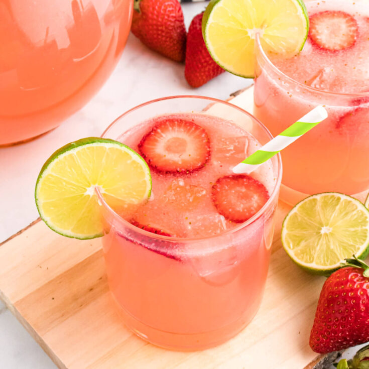

Strawberry Limeae Drink, the summer friend
Description:
A sweet and tangy drink that will keep you cool and refreshed all summer long.
The vibrant flavors of ripe strawberries and zesty lime come together in this easy-to-make beverage that’s a
total crowd-pleaser

Ingredients
- 1 lb fresh strawberries, hulled
- 1/2 cup fresh lime juice (about 4-5 limes)
- 1/2 cup sugar (adjust to taste)
- 4 cups cold water
- Ice cubes
- Fresh mint leaves for garnish (optional)
Steps
- In a blender, combine fresh strawberries, lime juice, and sugar. Blend until smooth.
- Strain the strawberry mixture through a fine mesh sieve to remove any pulp (optional, but recommended for a
smoother drink).
- Pour the strained mixture into a large pitcher and add cold water. Stir to combine.
- Adjust sweetness by adding more sugar if needed, and stir until dissolved.
- Serve over ice and garnish with fresh mint leaves if desired.
- Enjoy your refreshing strawberry limeade!
Enjoy you meal!
Home